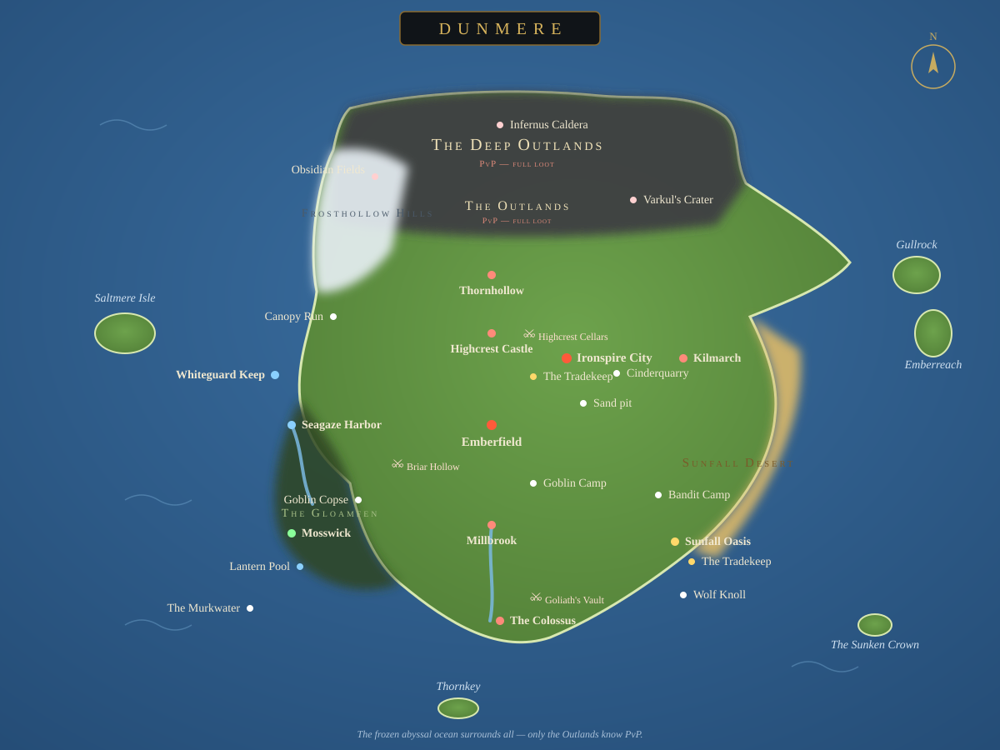

Dunmere — called Cinderrealm by those who cling to its cooling crust — sits upon a dying subterranean engine: the World-Forge. Below, the fires gutter. Above, an endless frozen abyssal ocean presses in from every horizon. Between the deep heat and the killing cold, civilization holds to the warmth like a traveler to a campfire.
All things exist in one of three states of the Thermal Continuum. The Ember Spark is life and magic. The Slag is metal, stone, and matter. The Cold Ash is decay, frost, and hunger — the entropy waiting beyond every wall.
You arrive in Emberhold with nothing but a spark. What it becomes — hearthfire or wildfire — is yours to decide.
The Hearth-Father · The Spark. God of order, heat, and devotion. His white-gold fires burn in every temple brazier from Emberhold to Ironspire City, where the Admin Crown Guard keeps his peace.
The Slag-Molder · Balance. God of earth, stone, metals, and balance. Every pick swung in the Glimmer Pits honors Tornil — the skill traditions are his liturgy.
The Ashen Hunger · The Cold Ash. God of chaos, entropy, and frost. Ruler of the lawless Outlands, where the Cold Ash Covenant gathers the desperate and the damned.

Safe. The starting homeland — Emberfield village and the peasant hamlets below. Monsters roam the wilds, but no hero hunts another here.
Safe. Central metropolis. The First Tradekeep and the Admin Crown Guard.
Safe. South-east oasis, crystal mines, the second Tradekeep. Beware the dunes' monsters.
Safe. Swamp below Stillwater Lake, along the Murkwater River. The wildlife bites.
Safe. Snowy highlands and the ancient gnome/elf enclave, across from Saltmere Isle.
Safe. Far-west coastal fortress against the frozen ocean, facing Saltmere Isle.
Safe. Eastern cliffside citadel above the heat conduits.
Safe. Far-eastern frontier town at the edge of the known world.
Safe. Hidden waters in the south-east corner — a welcome rest.
Safe. Marsh-side village near the Gloamfen.
Safe. Thorn-choked village, north of its old grounds.
PvP — the only dangerous ground. Far-north voluntary full-loot PvP. Risk and loot scale with depth into the ice. Morgast is waiting.
Safe. Beneath Highcrest Castle — torch-lit vaults and the first taste of the deep dark.
Safe. A thorn-choked underworld where the roots go deeper than any map.
Safe. The deepest delve — Ember-Core chambers and bosses that do not die quietly.
Master the sacred flame — tend hearths, fire kilns, call down burning judgment.
Seven tiers of metal, from slag-iron to white gold. The forge is Tornil's altar.
Prayer and blessing at Vaelen's braziers. Faith, properly tended, is a weapon.
Draw raw Ember Spark from the world and shape it into runes and relics.
Delve the Glimmer Pits and deep veins. The earth gives — to those who dig.
Fish the Murkwater and thawed inlets. Even the Cold Ash leaves the patient fed.
Grind, mix, brew. Gloamfen's swamps grow cures — and poisons.
Hunt the Cold Ash's broods for bounty. Some things only die by contract.
…plus Precision, Might, Resilience, Marksmanship, Vitality, Arcana, Culinary, Logging, Artisan, Thieving, Fletching, and Agility.